MATH 1830 Notes
Mary Monroe-Ellis
Susan Mosteller
Unit 1 Limits
1.P Writing Equations of Lines
Introduction
Some problems can be represented by linear equations which can then be used to find solutions or make predictions. In this activity you will use slopes and ordered pairs to write expressions that model these problems.
-
You need to find a formula for the number of cars produced by a new plant that was opened 25 days ago. You are told that three days ago the plant had 450 cars on hand, and that yesterday it had 480 cars on hand. You are also told that some of these cars came from previous inventory. Assume that the plant produces cars at this same rate and has produced them at this same rate since it opened.Define “x” to be the time from today and “y” to be the number of cars on hand. Therefore, an ordered pair (x, y) will represent (time from today, number of cars on hand).
- Write an ordered pair using the information about the cars on hand three days ago.
$\left( { - 3,450} \right)$
- Write a second ordered pair using the information about the cars on hand yesterday.
$\left( { - 1,480} \right)$
- You need to know the rate at which the plant is producing cars. Another name for this rate of change is “slope.” Use the two ordered pairs to find the rate of change.
$m = \frac{{{y_2} - {y_1}}}{{{x_2} - {x_1}}} = \frac{{480 - 450}}{{ - 1 - \left( { - 3} \right)}} = \frac{{30}}{2} = 15$
The plant is producing 15 cars per day.
- Use the slope and one of the ordered pairs (doesn’t matter which one!) to write a linear equation describing this problem. Use point-slope form: $y-y_1=m(x-x_2).$
Using point $\left( { - 3,450} \right) \quad\ y-450=15(x--3)$
Using point $\left( { - 1,480} \right) \quad\ y-480=15(x--1)$
- Write the equation in slope-intercept form: $y = mx + b.$
$y = 15x + 495$
- Now write the equation in standard form: $ax + by = c.$
$y = 15x + 495$
$-15x+y =495$
$15x - y = - 495$
- Use the equation to find the number of cars the plant had on hand when it opened.
Because the plant opened 25 days ago, $x=-25$
$y = 15\left( { - 25} \right) + 495 = 120$ cars
On the day the the plant opened, there were 120 cars on hand.
- Use the equation to find the number of cars the plant will have on hand in five days.
Assume in 5 days means 5 days from today.
$y = 15\left( 5 \right) + 495 = 570$ cars
Five days from today, the plant will have 570 cars on hand.
- Use the equation to find when the plant will have 675 cars on hand.
$y=675$
$675 = 15x + 495$
$x = 12$
Twelve days from today, the plant will have 675 cars.
- Graph the equation on the interval [-3,13].
$y = 15x + 495$
x axis: time from today, in days
y axis: number of cars on hand
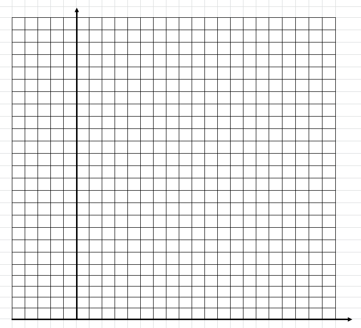
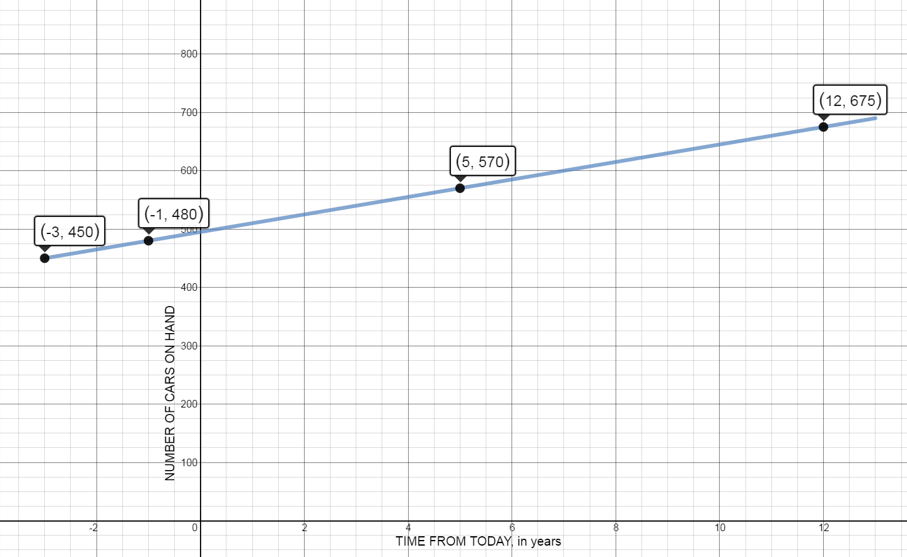
- Write an ordered pair using the information about the cars on hand three days ago.
-
Ally Bank is offering its customers a 2-year Certificate of Deposit (CD) paying 1.29% (APR) with no minimum deposit. Define x to be the amount deposited and y to be the APR.
- Write ordered pairs that would represent depositing \$100, \$1000, and \$5000 in the CD.
$\left( 100,1.29 \right)$
$\left( 1000,1.29 \right)$
$\left( 5000,1.29 \right)$
- What is the rate of change of the APR?
$m = \frac{{{y_2} - {y_1}}}{{{x_2} - {x_1}}} = \frac{{1.29 - 1.29}}{{1000 - 100}} = \frac{0}{{900}}$
$m=0$
- Find the linear equation that represents this problem.
$y = 1.29$
- Graph the equation.
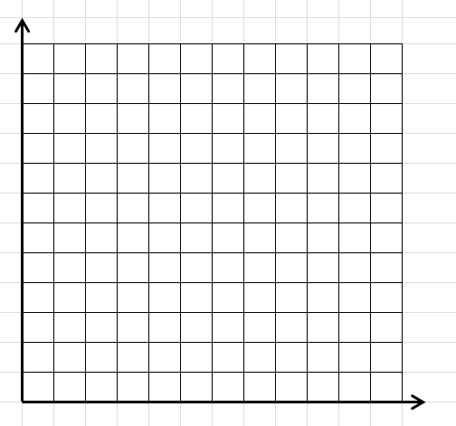
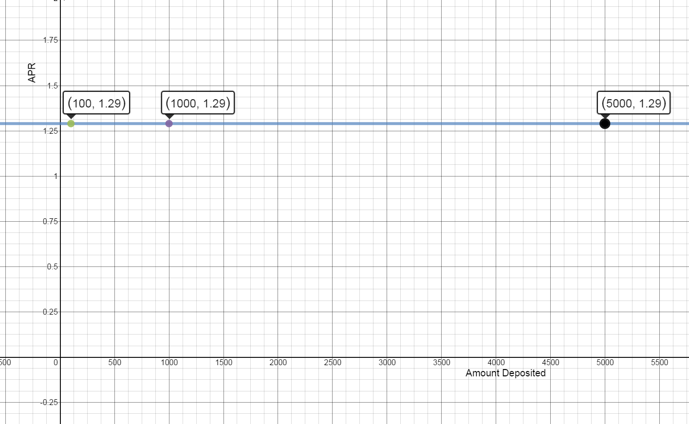
- Write ordered pairs that would represent depositing \$100, \$1000, and \$5000 in the CD.
-
When Apple stock was first listed on the Nasdaq Stock Exchange on December 2, 1980, the price for one share of stock was \$28.75. On June 12, 1995, the day Sam was born, his aunt gave him one share of Apple stock. On that day it was worth \$44. On January 14, 2015, one share of Apple stock was selling for \$109.01.
Define x to be the number of shares of Apple stock and y to be the value of the stock.
- Write three ordered pairs to represent the value of the stock on these 3 days.
$\left( {1,28.75} \right)$, $\left( {1,44} \right)$, $\left( {1,109.01} \right)$
- Graph these three points.

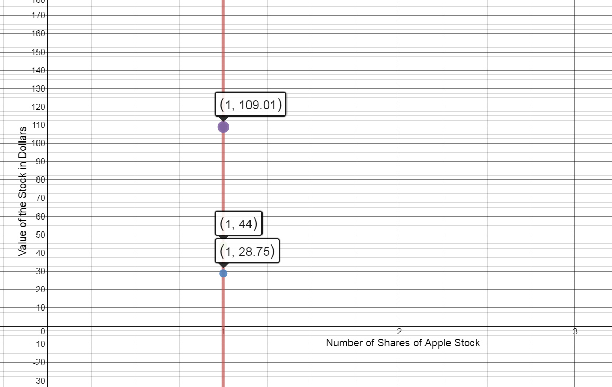
- Write the equation of the line.
$x = 1$
- What is the slope of this line?
$m = \frac{{{y_2} - {y_1}}}{{{x_2} - {x_1}}} = \frac{{44 - 28.75}}{{1 - 1}} = \frac{{15.25}}{0}$
The slope is undefined
- Is this a function? Explain.
No. There are multiple outputs for the same input.
- Write three ordered pairs to represent the value of the stock on these 3 days.
Notes
-
Write the equation of the vertical and horizontal lines through the point (2, 4) . Graph both lines. What is the slope of each line?

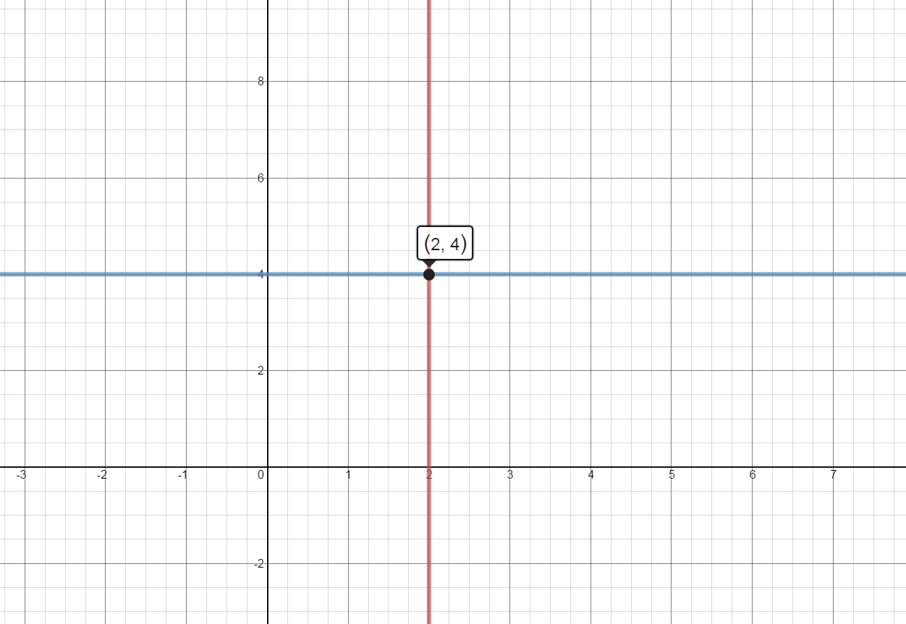
Vertical Line: $x = 2$ with undefined slope
Horizontal Line: $y = 4$ with slope = 0
-
For each of the sets of points below, find:
i. the slope of the line
ii. the slope intercept form of the line
iii. the standard form of the line
iv. the y intercept and the x intercept of the line
- (3, 5) and (-1, 7)
-
$m=\frac{7-5}{-1-3}=\frac{2}{-4}=$ $-\frac{1}{2}$
-
$y-5=-\frac{1}{2}(x-3)\Rightarrow y-5=-\frac{1}{2}x+\frac{3}{2}$
$y=-\frac{1}{2}x+\frac{13}{2}$
-
$y=-\frac{1}{2}x+\frac{13}{2}\Rightarrow 2y=-1x+13$
$x+2y=13$
-
y-intercept $(0,\frac{13}2)$ and x-intercept $(13,0)$
-
- (2, 7) and (2, -3)
-
$m = \frac{{7 + 3}}{{2 - 2}}=$ $undefined$
-
$x = 2$
-
$x = 2$
-
y - intercept: none and x-intercept $(2,0)$
-
- (1, 3) and (0, 3)
-
$m = \frac{{3 - 3}}{{1 - 0}} =$ $ 0$
-
$y = 3$
-
$y = 3$
-
y-intercept$(0,3)$ and x-intercept: none
-
- (-4, -8) and (-3, -4)
-
$m = \frac{{ - 8 + 4}}{{ - 4 + 3}} = \frac{{ - 4}}{{ - 1}} =$ $ 4$
-
$y+8=4(x+4)$
$y+8=4x+16$
$y=4x+8$
-
$y-4x=8 \quad\ -y+4x=-8$
$4x-y=-8$
-
y-intercept $(0,8)$ and x-intercept $(-2,0)$
-
- (3, 5) and (-1, 7)
-
You want to rent a 4”x8” U-Haul Trailer. The rental fee is \$15 for the first day and \$13.50 for each additional day. What is the equation relating the cost, y, to the number of days you rent the trailer?
$y=15+13.50x$
1.1 Limits Graphically and Algebraically
Introduction
-
Box Office Receipts
The total worldwide box-office receipts for a long running blockbuster movie are approximated by the function $$T(x) = \frac{{120{x^2}}}{{{x^2} + 4}}$$ where T(x) is measured in millions of dollars and x is the number of months since the movie’s release. What are the total box-office receipts after:
- The first month?
$T\left( 1 \right) = \frac{{120{{\left( 1 \right)}^2}}}{{{1^2} + 4}} = 24$
The total box-office receipts after 1 month are \$24 million.
- The second?
$T\left( 2 \right) = \frac{{120{{\left( 2 \right)}^2}}}{{{2^2} + 4}} = 60$
The total box-office receipts after 2 months are \$60 million.
- The third?
$T\left( 3 \right) = \frac{{120{{\left( 3 \right)}^2}}}{{{3^2} + 4}} = 83$
The total box-office receipts after 3 months are \$83 million.
- The hundredth?
$T\left( {100} \right) = \frac{{120{{\left( {100} \right)}^2}}}{{{{100}^2} + 4}} = 119.95$
The total box-office receipts after 100 months are \$119.95 million.
- What will the movie gross in the long run? (When x is very large.)
In the long run, the movie will gross approximately \$120 million.
- The first month?
-
Driving Costs
A study of driving costs of 1992 model subcompact cars found that the average cost (car payments, gas, insurance, upkeep, and depreciation), measured in cents/mile, is approximated by $$C(x) = \frac{{2010}}{{{x^{2.2}}}} + 17.80$$ where x denotes the number of miles (in thousands of miles) the car is driven in a year. What is the average cost of driving a subcompact car:
- 5,000 miles per year?
$C\left( 5 \right) = \frac{{2010}}{{{5^{2.2}}}} + 17.80 = 76.10$
The average cost when driving 5,000 miles per year is 76.1 cents per mile.
- 10,000 miles per year?
$C\left( {10} \right) = \frac{{2010}}{{{{10}^{2.2}}}} + 17.80 = 30.50$
The average cost when driving 10,000 miles per year is 30.5 cents per mile.
- 25,000 miles per year?
$C\left( {25} \right) = \frac{{2010}}{{{{25}^{2.2}}}} + 17.80 = 19.50$
The average cost when driving 25,000 miles per year is 19.5 cents per mile.
- 50,000 miles per year?
$C\left( {50} \right) = \frac{{2010}}{{{{50}^{2.2}}}} + 17.80 = 18.17$
The average cost when driving 50,000 miles per year is 18.2 cents per mile.
- What happens to the average cost as the number of miles driven increases without bound?
The average cost approaches 17.8 cents per mile when the car is driven “infinite” miles in a year.
- Verify by evaluating the cost when the number of miles is 1,000,000 (or any large number)
$C\left( {1000} \right) = \frac{{2010}}{{{{1000}^{2.2}}}} + 17.80$
The average cost per mile is approximately \$17.80 per mile when the car is driven 1,000,000 miles per year.
Source https://domoremath.files.wordpress.com/2013/09/limits-word-prob-with-solns.pdf
- 5,000 miles per year?
Notes
Limits: A Graphical Approach
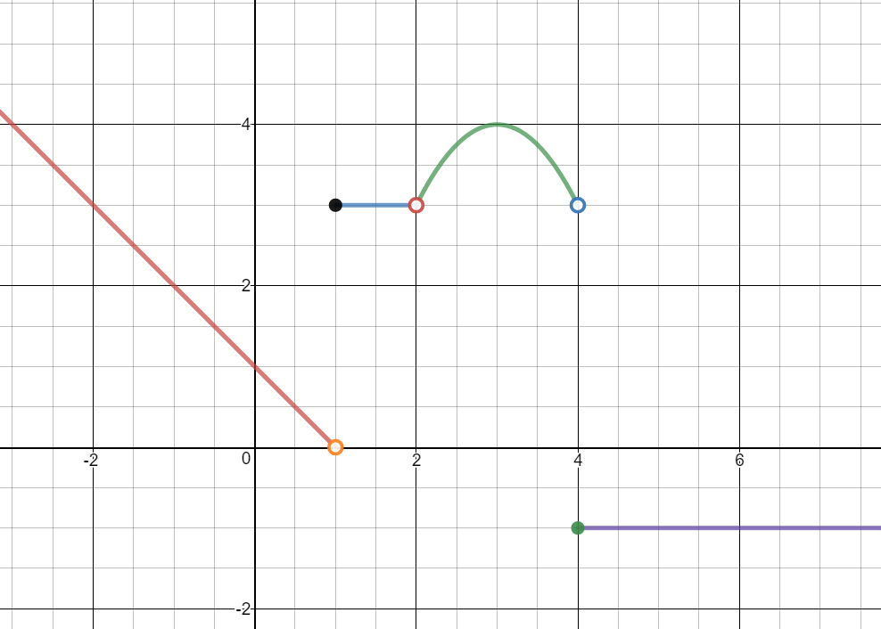$f(x)= \begin{cases} -x+1 & x \lt 0 \\ 3 & 1\leq x\leq 2 \\ -\left(x-3\right)^2+4 & 2 \lt x \lt 4\\ -1 & x\geq 4\\ \end{cases} $
Use the piecewise function to answer the questions below.
Evaluate the limits graphically. If the limit does not exist, explain why.
-
$\mathop {\lim }\limits_{x\; \to {0^ - }} f\left( x \right) =$ $1$
-
$\mathop {\lim }\limits_{x\; \to {0^ + }} f\left( x \right) =$ $1$
-
$\mathop {\lim }\limits_{x\; \to 0} f\left( x \right) =$ $1$
-
$f\left( 0 \right) = $ $1$
-
$\mathop {\lim }\limits_{x\; \to {1^ - }} f\left( x \right) =$ $0$
-
$\mathop {\lim }\limits_{x\; \to {1^ + }} f\left( x \right) =$ $3$
-
$\mathop {\lim }\limits_{x\; \to 1} f\left( x \right)=$ Does not exist
The limits from the left and right are not equal, so the limit does not exist.
-
$f\left( 1 \right) =$ $3$
-
$\mathop {\lim }\limits_{x\; \to {2^ - }} f\left( x \right) =$ $3$
-
$\mathop {\lim }\limits_{x\; \to {2^ + }} f\left( x \right) =$ $3$
-
$\mathop {\lim }\limits_{x\; \to 2} f\left( x \right) =$ $3$
-
$f\left( 2 \right) =$ undefined
-
Is it possible to define $f\left( 1 \right)$ so that $\mathop {\lim }\limits_{x\; \to 1} f\left( x \right) = f\left( 1 \right)$? Explain.
No. The limit does not exist. There is a jump in the graph.
-
Is it possible to redefine $f\left( 2 \right)$ so that $\mathop {\lim }\limits_{x\; \to 2} f\left( x \right) = f\left( 2 \right)$? Explain.
Yes. Let $f\left( 2 \right) = \;3$
-
$\mathop {\lim }\limits_{x\; \to - 1} f\left( x \right) =$ $2$
-
$\mathop {\lim }\limits_{x\; \to 4} f\left( x \right) =$ Does not exist
The limits from the left and right are not equal, so the limit does not exist.
-
$\mathop {\lim }\limits_{x\; \to 2} f\left( x \right) =$ $3$
-
$\mathop {\lim }\limits_{x\; \to 3} f\left( x \right) =$ $4$
-
$\mathop {\lim }\limits_{x\; \to - 2} f\left( x \right) =$ $3$
Limits: An Algebraic Approach
Find each indicated quantity, if it exists.
-
$\mathop {\lim }\limits_{x \to 4} \;{x^2} - 5x + 1 =$
${4^2} - 5\left( 4 \right) + 1 =$
$- 3$
-
$\mathop {\lim }\limits_{x \to - 5} \;2{x^2} + 10x + 7 =$
$2{\left( { - 5} \right)^2} + 10\left( { - 5} \right) + 7 =$
$7$
-
$f\left( x \right) = \sqrt{x+4}$
- $\mathop {\lim }\limits_{x \to {4^ + }} {\mkern 1mu} f(x)=$
$\sqrt{-4+4}=\sqrt0$
$=0$
- $\mathop {\lim }\limits_{x \to {4^ - }} {\mkern 1mu} f(x)$
$=-4+5=$
$1$
- $\mathop {\lim }\limits_{x \to {4}} {\mkern 1mu} f(x)=$ Does not exist
- $f(-4)=$ undefined
- $\mathop {\lim }\limits_{x \to {4^ + }} {\mkern 1mu} f(x)=$
-
$g\left( x \right) = \;\frac{{x - 2}}{{\left| {x - 2} \right|}}$
- $\mathop {\lim }\limits_{x\; \to {2^ + }} g\left( x \right) = \;$ 1
- $\mathop {\lim }\limits_{x\; \to {2^ - }} g\left( x \right) = \;$ -1
- $\mathop {\lim }\limits_{x\; \to {2^{}}} g\left( x \right) = \;$ Does not exist
- $g\left( 2 \right) = $ undefined
-
$f\left( x \right) = \;\frac{{3{x^2}\; + 2x - 1}}{{x{\;^2} + 3x + 2}}$
- $\underset{x\rightarrow -3}{lim}f(x)=$
$\underset{x\rightarrow -3}{lim}f(x)=\frac{3{{\left( -3 \right)}^{2}}~+2\left( -3 \right)-1}{\left( -3 \right){{~}^{2}}+3\left( -3 \right)+2}=$
$10$
- $\underset{x\rightarrow -1}{lim}f(x)=$
$\frac{3{{\left( -1 \right)}^{2}}~+2\left( -1 \right)-1}{\left( -1 \right){{~}^{2}}+3\left( -1 \right)+2}=\frac{0}{0}$
Indeterminate form. Factor, Reduce, Try Again.
$\underset{x\rightarrow -1}{lim}f(x)=\underset{x\rightarrow -1}{lim}\frac{\left( 3x-1 \right)\left( x+1 \right)}{\left( x+1 \right)\left( x+2 \right)}=\underset{x\rightarrow -1}{lim}\frac{\left( 3x-1 \right)}{\left( x+2 \right)}=$
$-4$
- $\mathop {\lim }\limits_{x\; \to \;2} f\left( x \right)$ $=\frac{5}{4}=1.25$
- $\mathop {\lim }\limits_{x\; \to \; - 2} f\left( x \right)$ $=\frac{7}{0}\,$ Does not exist
- $\underset{x\rightarrow -3}{lim}f(x)=$
-
$\underset{x\rightarrow 10}{lim} \frac{{{x^2}\; - 15x + 50}}{{{{\left( {x - 10} \right)}^2}}}$
$=\frac{0}{0}$
Indeterminate form. Factor, reduce, try again.
$\underset{x\rightarrow 10}{lim}\,\frac{\left( x-5 \right)\left( x-10 \right)}{{{\left( x-10 \right)}^{2}}}=\underset{x\rightarrow 10}{lim}\,\frac{\left( x-5 \right)}{\left( x-10 \right)}=\frac{5}{0}$
The limit does not exist. Vertical asymptote at x=10. On inspection of the graph, the limit as x approaches 10 from the left and the limit as x approaches 10 from the right are not equal.
-
Compute the following limit for the function: $\mathop {\lim }\limits_{h \to 0} \frac{{f\left( {x + h} \right) - f\left( x \right)}}{h}$ $$f\left( x \right) = {x^2}\; + 5x - 1$$
- Define $f\left( {x + h} \right)$ and $f\left( x \right)$
$f\left( x+h \right)={{\left( x+h \right)}^{2}}+5\left( x+h \right)-1$
$f\left( x+h \right)={{x}^{2}}+2xh+{{h}^{2}}+5x+5h-1$
$f\left( x \right)={{x}^{2}}+5x-1$
- Calculate $f\left( {x + h} \right) - f\left( x \right)$
$ = \left( {{x^2} + 2xh + {h^2} + 5x + 5h - 1} \right) - \left( {{x^2} + 5x - 1} \right)$
$ = 2xh + {h^2} + 5h$
- Divide by h
$\frac{{2xh + {h^2} + 5h}}{h} =$
$ 2x + h + 5$
- Evaluate the limit
$\mathop {\lim }\limits_{h \to 0} \left ( { 2x + h + 5} \right) = 2x + 0 + 5 =$
$ 2x + 5$
- Define $f\left( {x + h} \right)$ and $f\left( x \right)$
-
A taxi service charges \$3.00 per mile for the first 10 miles. If the trip is over 10 miles, they charge \$5.00 per mile for every mile. Write a piecewise definition of the charge G(x) for taxi fares of x miles.
Graph G(x) for $0 < x\; \le 25.$
$f(x)= \begin{cases} 3x & 0\leq x\leq 10 \\ 5x & x > 10\\ \end{cases} $
Find:
$\underset{x\rightarrow10^-}{lim}G(x)=$ $30$
$\underset{x\rightarrow10^+}{lim}G(x)=$ $50$
$\underset{x\rightarrow10}{lim}G(x)=$ Does not exist.
![Graph of f(x) on domain (0,25]. f(x)=3x for domain (0,10]. f(x)=5x for domain (10,25]](images/notes/u1s1p27aa.png)
1.2 Infinite Limits and Asymptotes
Introduction
Discuss this graph with your group.
Write down everything you observe.
Be prepared to share with the class.

Notes
Infinite Limits, Vertical asymptotes, and Holes:
-
Describe the behavior of $f(x)$ at each zero of the denominator
$f\left( x \right) = \;\frac{{{x^2}\; + 3x + 2}}{{{x^2} + 5x + 4}}$
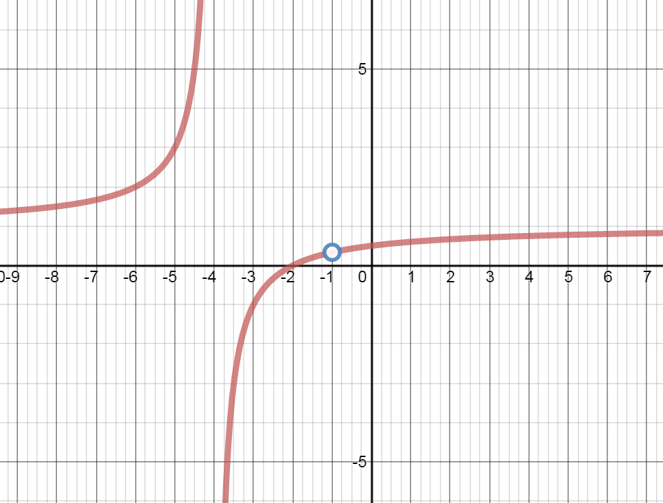
- $x = - 4$
Vertical Asymptote at x=-4
- $x = - 1$
Hole at x=-1
- $x = - 4$
-
How would you determine whether the graph has holes and/or vertical asymptotes if you don’t have a graph?
- With Limits:
$\mathop {\lim }\limits_{x \to - 4} \frac{{{x^2} + 3x + 2}}{{{x^2} + 5x + 4}} = \frac{6}{0}$
$\mathop {\lim }\limits_{x \to - 1} \frac{{{x^2} + 3x + 2}}{{{x^2} + 5x + 4}} = \frac{0}{0}$
$\mathop {\lim }\limits_{x \to - 1} \frac{{\left( {x + 2} \right)\left( {x + 1} \right)}}{{\left( {x + 4} \right)\left( {x + 1} \right)}} =$
$\mathop {\lim }\limits_{x \to - 1} \frac{{x + 2}}{{x + 4}} =$
$\frac{{ - 1 + 2}}{{ - 1 + 4}} =$
$\frac{1}{3}$
- Algebraically:
Approaching $x=-4$ from the left and the right:
$f( - 4.00001) = 2 \times {10^5}\quad\quad\quad\mathop {\lim }\limits_{x \to - {4^ - }} = \infty $
$f( - 3.99999) = - 2 \times {10^5}\quad\quad\quad\mathop {\lim }\limits_{x \to - {4^ + }} = - \infty $
$\mathop {\lim }\limits_{x \to - 4} $ Does Not Exist
Approaching $x=-1$ from the left and the right:
$f( - 1.00001) = .33333\quad\quad\quad\mathop {\lim }\limits_{x \to - {1^ - }} = \frac{1}{3}$
$f( - 0.99999) = .333333\quad\quad\quad\mathop {\lim }\limits_{x \to - {1^ + }} = \frac{1}{3}$
$\mathop {\lim }\limits_{x \to - 1}= \frac{1}{3}$
- With Limits:
-
Describe the behavior of $f(x)$ at each zero of the denominator $f\left( x \right) = \;\frac{{{x^2}\; + 10}}{{4{{\left( {x - 3} \right)}^2}}}$
Zero of the demominator at $x=3.$ The limit approaches infinity from the left and from the right.
Limits at Infinity: Polynomials and Rational Expressions
-
Briefly describe the behavior of the two individual functions as x approaches positive infinity?
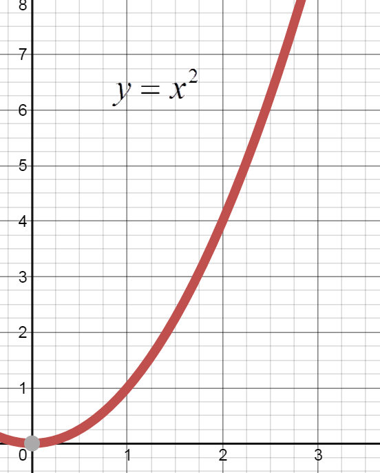y approaches positive infinity as x approaches positive infinity.

y approaches 0 as x approaches positive infinity.
End Behavior of Polynomials
-
Let $p\left( x \right) = 3{x^3}\; - 4{x^2}\; - 2x + 5,$
Find the limit of $p\left( x \right)$ as $x \to \;\infty $ and as $x \to \; - \infty $
From calculator table or graph
$\underset{x\rightarrow\infty}{lim}p(x)=\infty$
$\underset{x\rightarrow\infty}{lim}p(x)=-\infty$
-
Let $p\left( x \right) = - 6{x^4} + 3{x^2} + 5$ ,
Find the limit of $p\left( x \right)$ as $x \to \;\infty $ and as $x \to \; - \infty $
From calculator table or graph
$\underset{x\rightarrow\infty}{lim}p(x)=-\infty$
$\underset{x\rightarrow\infty}{lim}p(x)=-\infty$
Horizontal Asymptotes: End Behavior and Rational Expressions
-
Let $f\left( x \right) = \frac{{3{x^2}\; - 5x + 9}}{{2{x^2} + 7}}$ , find the limit of $f\left( x \right)$ as $x \to \;\infty $ and as $x \to \; - \infty $
From calculator table or graph
$\underset{x\rightarrow\infty}{lim}f(x)=1.5$
$\underset{x\rightarrow\infty}{lim}f(x)=1.5$
Identify the horizontal asymptotes of the following rational expression (if the horizontal asymptote exists)
-
$\underset{x\rightarrow\infty}{lim} \;\frac{{7{x^3}\; - {x^2}\; + 1}}{{5{x^3}\; + 6x\; - 7}} =$
$\underset{x\rightarrow\infty}{lim} \;\frac{{7{x^3}\;}}{{5{x^3}\;}} = \mathop {\lim }\limits_{x \to \infty } \;\frac{{7\;}}{{5\;}} = \frac{7}{5}$
Horizontal Asymptote at $y=\frac{7}{5}$
-
$\underset{x\rightarrow\infty}{lim} \;\frac{{6{x^4}\;-{x^2}\; + 1}}{{2{x^6}\;\; - 8x}} =$
$\underset{x\rightarrow\infty}{lim} \;\frac{{6{x^4}\;}}{{2{x^6}}} = \underset{x\rightarrow\infty}{lim} \;\frac{{3\;}}{{{x^2}}} = 0$
Horizontal Asymptote at $y=0$
-
$\underset{x\rightarrow\infty}{lim} \;\frac{{4{x^5}\;-\;9{x^3} - \;1}}{{5{x^3}\; + 3{x^2}\; - 7}} =$
$\underset{x\rightarrow\infty}{lim}\;\frac{{4{x^5}\;}}{{5{x^3}\;}} = \underset{x\rightarrow\infty}{lim} \;\frac{{4{x^2}\;}}{{5\;}} = \infty $
No Horizontal Asymptote
Vertical and Horizontal Asymptotes: A summary
Find all vertical asymptotes, horizontal asymptotes, and holes of the function, showing all your work:
-
$f\left( x \right) = \;\frac{{2{x^2}\;\; - \;\;32}}{{{x^2}\; + \;5x\; + \;4}}$
$f\left( x \right) = \;\frac{{2\left( {x + 4} \right)\left( {x - 4} \right)}}{{\left( {x + 4} \right)\left( {x + 1} \right)}}$
Vertical Asymptote: x=-1
Hole: x=-4
Horizontal Asymptote: y=2
-
$f\left( x \right)\; = \frac{{{x^2}\;\; - \;\;9}}{{{x^2}\;\; - \;\;4}}$
$f\left( x \right) = \;\frac{{\left( {x + 3} \right)\left( {x - 3} \right)}}{{\left( {x + 2} \right)\left( {x - 2} \right)}}$
Vertical Asymptote: x=2 and x=-2
Hole: none
Horizontal Asymptote: y=1
Find all vertical asymptotes, horizontal asymptotes, and holes of the function by a quick analysis:
-
$f\left( x \right)\; = \frac{{x\;\; + 2}}{{{x^2}\; + \;3}}$
Vertical Asymptote: none
Hole: none
Horizontal Asymptote: y=0
-
$f\left( x \right)\; = \frac{{{x^2}\; - 3x - \;10}}{{{x^2}\; - \;4x - 5}}$
$f(x) = \frac{{\left( {x - 5} \right)\left( {x + 2} \right)}}{{\left( {x - 5} \right)\left( {x + 1} \right)}}$
Vertical Asymptote: x=-1
Hole: x=5
Horizontal Asymptote: y=1
-
$f(x) = \frac{{{x^2} + 5x - 14}}{{x - 2}}$
Vertical Asymptote: none
Hole: x=2
Horizontal Asymptote: none
1.3 Continuity
Introduction
-
The table below shows the cost of mailing a letter that weighs x ounces.
Weight Cost 0 < x ≤ 1 49¢ 1 < x ≤ 2 70¢ 2 < x ≤ 3 91¢ 3 < x ≤ 4 112¢ 4 < x ≤ 5 133¢ - Complete the table of letters with the following weights.
Weight Cost .98 49
1.26 70
2.55 91
3.01 112
4.29 133
- Graph the function.
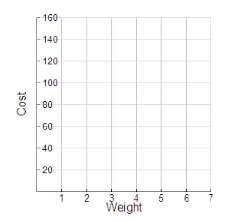
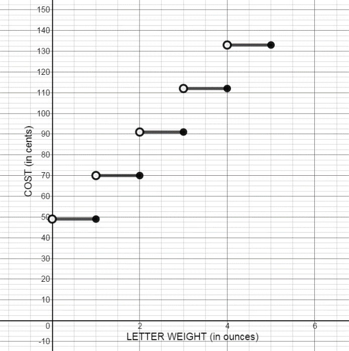
- Complete the table of letters with the following weights.
-
Given: $f(x) = \frac{{3{x^2} - 12x - 15}}{{{x^2} - 3x - 10}}$
- From looking at the given function (and NOT graphing), where would you expect to see vertical asymptote(s)?
$f(x) = \frac{{3{x^2} - 12x - 15}}{{{x^2} - 3x - 10}} = \frac{{3{x^2} - 12x - 15}}{{\left( {x - 5} \right)\left( {x + 2} \right)}}$
Expect the vertical asymptotes to be located at x value where the denominator is equal 0, and the numerator is equal some number other than zero. There are possibly vertical asymptotes at $x = 5$ and $x = -2$.
- Graph the function. Where are the vertical asymptote(s)?


Vertical Asymptote at x = - 2 and a hole at x = 5.
- Do you get the same answer for a & b? Why or why not?
There was a hole at $x = 5$. If you factor the numerator AND the denominator, they both contain $(x - 5)$.
- What is the horizontal asymptote(s) for this function?
$\underset{x\rightarrow\infty}{lim} \frac{{3{x^2} - 12x - 15}}{{{x^2} - 3x - 10}} = \underset{x\rightarrow\infty}{lim} \frac{{3{x^2}}}{{{x^2}}} = \underset{x\rightarrow\infty}{lim} 3 = 3$
There is a horizontal asymptote at $y = 3$.
- From looking at the given function (and NOT graphing), where would you expect to see vertical asymptote(s)?
Notes
Informal Definition: Continuity
A function is continuous over an interval if the graph over the interval can be drawn without removing the pencil from the paper.
Formal Definition: Continuity
A function, f(x), is continuous at the point $x = c$ if all three of the following requirements are met:
- $\underset{x\rightarrow\ c}{lim} f\left( x \right)$ exists
- $f\left( c \right)$ exists
- $\underset{x\rightarrow\ c}{lim} f\left( x \right) = \;\;f\left( c \right)$
Examples of Continuous and Discontinuous Functions:
![Graph of f(x)=-(1/2)(x-1)^2 + 3. Hole in graph of f(x) at x=1. With equation f(x) should be 3. Point at (1,2). Domain of graph [-1,4]](images/notes/u1s3p1a.png)
![Graph of f(x)=-(1/2)(x-1)^2 + 3. Point at (1,3) defined and all other poings in dpmain [-1,4] defined as (x, f(x0)](images/notes/u1s3p1b.png)
Active Calculus https://open.umn.edu/opentextbooks
In Groups: Use the formal definition of continuity to discuss the continuity of the function whose graph is shown below.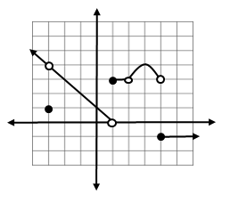
-
Continuity at $x = - 3$
Discontinuous @ $x = - 3 \quad\ \underset{x\rightarrow-3}{lim} f(x) \ne f( - 3)$
-
Continuity at $x = - 2$
Continuous @ $x = - 2 \quad\ $ Satisfies all 3 requirements
-
Continuity at $x = 1$
Discontinuous @ $x = 1 \quad\ \underset{x\rightarrow\ 1}{lim} f(x) \:\ $ DNE
-
Continuity at $x = 2$
Discontinuous @ $x = 2 \quad\ \underset{x\rightarrow\ 2}{lim} f(x) \ne f(2)$
-
Continuity at $x = 3$
Continuous @ $x = 3 \quad\ $ Satisfies all 3 requirements
-
Continuity at $x = 4$
Discontinuous @ $x = 4 \quad\ \underset{x\rightarrow\ 4}{lim} f(x) \:\ $ DNE
Rules for Continuity
- Constant functions $f(x) = k$ are continuous for all x
Example: $f(x) = - 2$
- Power functions $f(x) = {x^n}$, where n is a positive integer, are continuous for all x
Example: $f(x) = {x^5} $
- Polynomial Functions are continuous for all x
Example: $f(x) = 2{x^3} - 5x + 1$
- Rational Function s are continuous for all x except where the denominator = 0
Example: $f(x) = \frac{{{x^2} + 5}}{{x - 3}}$ Where numerator and denominator are polynomials
- $\sqrt[n]{{f(x)}}$ functions are continuous for all x where n is an odd positive integer > 1
Example: $\sqrt[3]{x}$
- $\sqrt[n]{{f(x)}}$ functions are continuous for all x where n is an even positive integer and f(x) is positive
Example: $\sqrt[4]{x}$
Assessing Continuity
Are the functions continuous? Use the Rules for Continuity to explain your answers..
-
$h\left( x \right) = 5 - 3x$
Yes, because it is a polynomial function.
-
$n\left( x \right) = \;\frac{{x - 3}}{{{x^2}\; + \;2x - 15}}$
$n\left( x \right) = \;\frac{{x - 3}}{{(x + 5)(x - 3)}}$
No, it is discontinuous at x=- 5 and x = 3.
-
$f\left( x \right) = \;\sqrt {25 - {x^2}} $
Continuous for $x: - 5 \le x \le 5$
-
$g\left( x \right) = \;\sqrt[3]{{{x^2} - 4}}$
Yes, continuous for all x because it is a function with an odd root.
1.4 Definition of Derivatives Key
Introduction
A decorative birthday balloon is being filled with helium. The table shows the volume of the helium in the balloon at 3 second intervals for 30 seconds.
| t(seconds) | V (cubic meters) |
|---|---|
| 0 | 0 |
| 3 | 4.2 |
| 6 | 33.5 |
| 9 | 113.0 |
| 12 | 267.9 |
| 15 | 523.3 |
| 18 | 904.3 |
| 21 | 1436.0 |
| 24 | 2143.6 |
| 27 | 3052.1 |
| 30 | 4186.7 |
This function can be approximated by the equation $y = 0.16{x^3} + 0.0003{x^2} - 0.007x + 0.0161$ (graphed below)

-
What are the dependent and independent variables for this problem? In what units is the rate of changed expressed?
The dependent variable is volume, in $cm^3.$
The independent variable is time, in seconds.
The rate of change is measured in $cm^3$ per second $({}^{c{{m}^{3}}}/{}_{\sec }).$
-
A secant line is a line that intersects two points on a curve. Draw a secant line on the graph for each of the following. Calculate the slope of the secant line for each of the following intervals.
- 21 s to 30 s
$\left(21,1436\right)\;\left(30,4186.7\right)\;\;{m_{secant}}\approx306\;cm^3/sec$
- 21 s to 27 s
$\left(21,1436\right)\;\left(27,3052.1\right)\;\;{m_{secant}}\approx269\;cm^3/sec$
- 21 s to 24 s
$\left(21,1436\right)\;\left(24,2143.6\right)\;\;{m_{secant}}\approx236\;cm^3/sec$
- 21 s to 30 s
-
What does the slope of the secant line represent?
The slope of the secant represents the average rate of change in the volume helium in the balloon over the time interval.
-
A tangent line is a line that intersects a curve at only one point. Draw a tangent line at the point on the graph corresponding to 21 s and estimate the slope of this line.
Answers will vary. At 21 seconds, the volume of the helium balloon is increasing at a rate of approximately $208 \;cm^3/sec.$
-
What does the slope of the tangent line represent?
The slope of the tangent line represents the instantaneous rate of change of the volume at a given time. At 21 seconds, the volume of the helium balloon is increasing at a rate of approximately $208 \;cm^3/sec.$
-
Compare the secant slopes to the slope of the tangent line. What do you notice?
As the interval becomes smaller, the slope of the secant line gets closer in value to the slope of the tangent line.
Source http://mysite.science.uottawa.ca/iabde083/ch01.pdf
Notes
Limit Definition of the Derivative of a Function: 4 Step ProcessStep 1 Find $f\left( {x + h} \right)$
Step 2 Find $f\left( {x + h} \right) - f\left( x \right)$
Step 3 Find $\frac{{f\left( {x + h} \right) - f\left( x \right)}}{h}$
Step 4 Find $\mathop {\lim }\limits_{h \to 0} \frac{{f\left( {x + h} \right) - f\left( x \right)}}{h}$
-
Use the limit definition of the derivative to find $f'\left( x \right)$, given $f\left( x \right) = \;{x^2}\; - 3x - 2$
Step 1
$f(x + h) = {(x + h)^2} - 3(x + h) - 2$
$f(x + h) = {x^2} + 2xh + {h^2} - 3x - 3h - 2$
Step 2
$f(x + h) - f(x) = \left( {{x^2} + 2xh + {h^2} - 3x - 3h - 2} \right) - \left( {{x^2}\; - 3x - 2} \right)$
$f(x+h)-f(x)= 2xh + {h^2} - 3h$
Step 3
$\frac{{f(x + h) - f(x)}}{h} = \frac{{2xh + {h^2} - 3h}}{h}$
$ \frac{{f(x + h) - f(x)}}{h} = \frac{{2xh}}{h} + \frac{{{h^2}}}{h} - \frac{{3h}}{h}$
$\frac{{f(x + h) - f(x)}}{h} = 2x + h - 3$
Step 4
$\mathop {\lim }\limits_{h \to 0} 2x + h - 3 = 2x + (0) - 3 = 2x - 3$
$f'(x) = 2x - 3$
-
Use the limit definition of the derivative to find $f'\left( x \right)$, given $f\left( x \right) = \;5{x^2} + 2x - 8$
Step 1
$f(x + h) = 5{(x + h)^2} + 2(x + h) - 8$
$f(x+h)= 5({x^2} + 2xh + {h^2}) + 2x + 2h - 8$
$f(x+h)=5{x^2} + 10xh + 5{h^2} + 2x + 2h - 8$
Step 2
$f(x + h) - f(x) = \left( {5{x^2} + 10xh + 5{h^2} + 2x + 2h - 8} \right) - \left( {5{x^2} + 2x - 8} \right)$
$f(x+h)-f(x)= 10xh + 5{h^2} + 2h$
Step 3
$\frac{{f(x + h) - f(x)}}{h} = \frac{{10xh + 5{h^2} + 2h}}{h}$
$ \frac{{f(x + h) - f(x)}}{h} = \frac{{10xh}}{h} + \frac{{5{h^2}}}{h} + \frac{{2h}}{h}$
$\frac{{f(x + h) - f(x)}}{h} = 10x + 5h + 2$
Step 4
$\mathop {\lim }\limits_{h \to 0} 10x + 5h + 2 = 10x + 5(0) + 2 = 10x + 2$
$f'(x) = 10x + 2$
Write the equation of the tangent line at x=2.Point $\quad f(2)=16\quad \quad (2,16)$
Slope $\quad {m_{tan}} = f'(2) = 10(2) + 2 = 20 + 2 = 22$
$y-y_1=m\left(x-x_1\right)\\ $
y - 16 = 22(x - 2)
y - 16 = 22x - 44
y = 22x - 28
-
Use the limit definition of the derivative to find $f'\left( x \right)$, given $f(x) = - 4{x^2} + x + 2$
Step 1
$f(x+h)=-4{{(x+h)}^{2}}+(x+h)+2$
$f(x+h)=-4({{x}^{2}}+2xh+{{h}^{2}})+x+h+2$
$f(x+h)=-4{{x}^{2}}-8xh-4{{h}^{2}}+x+h+2$
Step 2
$f(x+h)-f(x)=\left( -4{{x}^{2}}-8xh-4{{h}^{2}}+x+h+2 \right)-\left( -4{{x}^{2}}+x+2 \right)$
$f(x+h)-f(x)=-8xh-4{{h}^{2}}+h$
Step 3
$\frac{f(x+h)-f(x)}{h}=\frac{-8xh-4{{h}^{2}}+h}{h}$
$\frac{f(x+h)-f(x)}{h}=\frac{-8xh}{h}-\frac{4{{h}^{2}}}{h}+\frac{h}{h}$
$\frac{f(x+h)-f(x)}{h}=-8x-4h+1$
Step 4
$\mathop {\lim }\limits_{h \to 0} -8x-4h+1=-8x-4(0)+1=-8x+1$
${f}'(x)=-8x+1$
Write the equation of the tangent line at x = 1
Point $\quad f(1)=-1\quad \quad (1, - 1)$
Slope $\quad {m_{\tan}}= f'(1) =- 8(1) + 1 = - 8 + 1 = - 7$
$y-y_1=m\left(x-x_1\right)\\ $
y +1 = -7(x - 1)
y +1 = -7x +7
y = -7x +6
-
Use the limit definition of the derivative to find $f'\left( x \right)$, given $f\left( x \right) = \;\frac{6}{x}\;\,\, - \,\,2$
Step 1
$f(x + h) = \frac{6}{{x + h}} - 2$
Step 2
$f(x + h) - f(x) = \frac{6}{{x + h}} - \frac{6}{x}$
$f(x + h) - f(x) = \frac6{x+h}\left(\frac xx\right)-\frac6x\left(\frac{x+h}{x+h}\right)$
$f(x + h) - f(x) = \frac{{6x}}{{x(x + h)}} - \frac{{6x + 6h}}{{x(x + h)}}$
$f(x + h) - f(x) = \frac{{ - 6h}}{{x(x + h)}}$
Step 3
$\frac{{f(x + h) - f(x)}}{h} = \frac{{\left( {\frac{{ - 6h}}{{x(x + h)}}} \right)}}{h}$
$\frac{{f(x + h) - f(x)}}{h} = \frac{-6h}{x(x+h)}\cdot\frac1h = \frac{{ - 6}}{{x(x + h)}}$
Step 4
$\mathop {\lim }\limits_{h \to 0} \frac{{ - 6}}{{x(x + h)}} = \frac{{ - 6}}{{x(x + 0)}} = \frac{{ - 6}}{{x(x)}} = \frac{{ - 6}}{{{x^2}}}$
$f'\left( x \right) = -\frac{{ 6}}{{{x^2}}}$
Find the equation of the tangent line at $x = 3$Point $\quad f(3)=0\quad (3,0)$
Slope $\quad {m_{\tan}} = f'(3) = \frac{{ - 6}}{9} = - \frac{2}{3}$
$y-y_1=m\left(x-x_1\right)\\ $
$y -0 = - \frac{2}{3}(x - 3)$
$y = - \frac{2}{3}x + 2$
-
Friedman Academy is a charter school in South Texas. The school is not at capacity, and enrollment increases monthly. The charter school’s enrollment is modeled by $$y = f\left( x \right) = {x^2}\; + x + 100$$ Where y is in students and x is in years since 2008.
- Estimate the average change in enrollment (the average rate of change of y with respect to x) from the year 2010 to the year 2012.
Use points $(2,106)$ and $(4,120)$
Avg change: $\frac{120-106}{4-2}=\frac{14}{2}=$
Enrollment increases by 7 students per year.
- Find the function for the instantaneous rate of change in enrollment using the limit definition of the derivative.
Step 1
$f(x + h) = {(x + h)^2} + (x + h) + 100=$
${x^2} + 2xh + {h^2} + x + h + 100$
Step 2
$f(x + h) - f(x) =( {{x^2} + 2xh + {h^2} + x + h + 100}) - ({{x^2} + x + 100})$
$f(x + h) - f(x)= 2xh + {h^2} + h$
Step 3
$\frac{{f(x + h) - f(x)}}{h} = \frac{{2xh + {h^2} + h}}{h}$
$\frac{{f(x + h) - f(x)}}{h} = \frac{{2xh}}{h} + \frac{{{h^2}}}{h} + \frac{h}{h}$
$\frac{{f(x + h) - f(x)}}{h} = 2x + h + 1$
Step 4
$\mathop {\lim }\limits_{h \to 0}\,\left( 2x+h+1 \right)=2x+(0)+1=2x+1$
${f}'(x)=2x+1$
- Use the equation to calculate the instantaneous change in enrollment in 2010, 2011, and 2012.
$f'(2) = 2(2) + 1 = 4 + 1 = 5$
In 2010, enrollment is increasing by 5 students per year.
$f'(3) = 2(3) + 1 = 6 + 1 = 7$
In 2011, enrollment is increasing by 7 students per year.
$f'(4) = 2(4) + 1 = 8 + 1 = 9$
In 2012, enrollment is increasing by 9 students per year.
- Estimate the average change in enrollment (the average rate of change of y with respect to x) from the year 2010 to the year 2012.
-
Suppose an object moves along the y axis so that its location is $y=f\left( x \right)=2{{x}^{2}}~+3x$ at time x. y is in meters and x is in seconds
- Find the average velocity (the average rate of change of y with respect to x) for x changing from 2 to 4 sec.
Use the points $(2,14)$ and $(4,44)$
$avg\ rate\ of\ change=\frac{44-14}{4-2}=\frac{30}{2}=$
The average velocity from 2 to 4 seconds is $15m/s.$
- use the limit definition of the derivative to find the instantaneous velocity.
Step 1
$f(x + h) = 2{(x + h)^2} + 3(x + h)$
$f(x + h)= 2({x^2} + 2xh + {h^2}) + 3x + 3h$
$f(x + h)= 2{x^2} + 4xh + 2{h^2} + 3x + 3h$
Step 2
$f(x + h) - f(x) = \left( {2{x^2} + 4xh + 2{h^2} + 3x + 3h} \right) - \left( {2{x^2} + 3x} \right)$
$f(x + h) - f(x)= 4xh + 2{h^2} + 3h$
Step 3
$\frac{{f(x + h) - f(x)}}{h} = \frac{{4xh + 2{h^2} + 3h}}{h}$
$\frac{{f(x + h) - f(x)}}{h} = \frac{{4xh}}{h} + \frac{{2{h^2}}}{h} + \frac{{3h}}{h}$
$\frac{{f(x + h) - f(x)}}{h} = 4x + 2h + 3$
Step 4
$\mathop {\lim }\limits_{h \to 0} \left( {4x + 2h + 3} \right) = 4x + 2\left( 0 \right) + 3 = 4x + 3$
$f'(x) = 4x + 3$
- The instantaneous velocity at x = 2 seconds, 3 seconds, and 4 seconds.
$f'(2) = 4(2) + 3 = 8 + 3 = $ $11\;m/s$
$f'(3) = 4(3) + 3 = 12 + 3 = $ $15\;m/s$
$f'(4) = 4(4) + 3 = 16 + 3 = $ $19\;m/s$
- Find the average velocity (the average rate of change of y with respect to x) for x changing from 2 to 4 sec.
1.5 Derivatives: The Power Rule
Notes
Basic Differentiation Properties
Three Equivalent Terms:If $y\; = \;\;f\left( x \right),\;$ you can use any of these to represent the derivative $y' = f'\left( x \right) = \frac{{dy}}{{dx}}$
THE POWER RULE: If $f\left( x \right) = {x^n}$ then $f'\left( x \right) = n{x^{n - 1}}$
Using the Power Rule Find the indicated derivative:
-
$g\left( x \right) = {x^4}$
$g'\left( x \right) = 4{x^3}$
-
$y = 2{x^3}$
$y' = 6{x^{ 2}}$
-
$\frac{d}{{dx}}\left( 5 \right)$
$\frac{d}{{dx}}\left( 5 \right) = \frac{d}{{dx}}\left( {5{x^0}} \right) = 5\left( 0 \right){x^{ - 1}} =$
$0$
-
$y = \;\frac{1}{{{x^7}}} = {x^{ - 7}}$
$y' = - 7{x^{ - 8}} = \frac{{ - 7}}{{{x^8}}}$
-
$y = \;\frac{{{x^4}}}{{16}}$
$\frac{{dy}}{{dx}} = \frac{{4{x^3}}}{{16}} = \frac{{{x^3}}}{4}$
-
$y\; = 8 + 3t - 5{t^3}$
$\frac{{dy}}{{dt}} = 0 + 3 - 15{t^2} = 3 - 15{t^2}$
-
$g\left( x \right) = 6{x^{ - 5}} - \;\;5{x^{ - 4}}$
$g'\left( x \right) = - 30{x^{ - 6}} + 20{x^{ - 5}} =$
$ \frac{{ - 30}}{{{x^6}}} + \frac{{20}}{{{x^5}}}$
-
$\frac{d}{{dx}}\left( {\frac{{4{x^3}}}{{10}}\; - \;\;\frac{2}{{3{x^4}}}} \right)$
$\frac{d}{{dx}}\left( {\frac{4}{{10}}{x^3} - \frac{2}{3}{x^{ - 4}}} \right)$
$\frac{d}{{dx}} = \frac{{12}}{{10}}{x^2} + \frac{8}{3}{x^{ - 5}} = $
$\frac{{6{x^2}}}{5} + \frac{8}{{3{x^5}}}$
-
$H'\left( w \right)$ if $H\left( w \right) = \;\frac{5}{{{w^6}}}\; - \;\;7\sqrt w$
$H(w)= 5{w^{ - 6}} - 7{w^{1/2}}$
$H'(w) = - 30{w^{ - 7}} - \frac{7}{2}{w^{ - 1/2}} =$
$ \frac{{ - 30}}{{{w^7}}} - \frac{7}{{2\sqrt w }}$
-
$\frac{d}{{du}}\left( {7{u^{2/3}}\;\; + \;\;\;4{u^{ - 3/5}}} \right)$
$\frac{d}{{du}} = \frac{{14}}{3}{u^{ - 1/3}} - \frac{{12}}{5}{u^{ - 8/5}}$
-
Find and approximate the value(s) of$\;x$ where the graph of$\;f\;$has a horizontal tangent line. Use a graphing calculator to verify. $f\left( x \right) = 2{x^2}\; - 5x$
$f'(x) = 4x - 5$
The graph of f has a horizontal tangent where $f'(x) = 0$
$4x - 5 = 0$
$4x = 5$
$x = \frac{5}{4}$
-
A company’s total sales (in millions of dollars) t months from now are given by $S\left( t \right) = 0.032{t^4}\;\; + 0.5{t^3}\; + 2.8{t^2}\; + 9t - 4$
- Find $S'\left( t \right)$
$S'\left( t \right) = 0.128{t^3} + 1.5{t^2} + 5.6t + 9$
- Find $S\left( 4 \right)$ and $S'\left( 4 \right)$ Write a brief verbal interpretation of these results.
$S(4) = 0.032{(4)^4} + 0.5{(4)^3} + 2.8{(4)^2} + 9(4) - 4 = 116.99$
$S'(4) = 0.128{(4)^3} + 1.5{(4)^2} + 5.6(4) + 9 = 63.59$
Total sales after 4 months are \$116.99 million. The sales are increasing at a rate of $63.59 million per month.
- Find $S\left( 8 \right)$ and $S'\left( 8 \right)$ Write a brief verbal interpretation of these results.
$S(8) = 0.032{(8)^4} + 0.5{(8)^3} + 2.8{(8)^2} + 9(8) - 4 = 634.27$
$S'(8) = 0.128{(8)^3} + 1.5{(8)^2} + 5.6(8) + 9 = 215.34$
Total sales after 8 months are \$634.27 million. The sales are increasing at a rate of $215.34 million per month.
- Find $S'\left( t \right)$
-
A company decides to develop a cost equation based on the quantity of the product produced in a day. They collected the following data:
Quantity 20 35 50 65 80 95 110 Cost 642.35 766.48 858.82 928.83 1005.32 1078.82 1140.79 - Enter the data in a graphing calculator and find a cubic regression equation for the data.
Let $x$ represent the quantity produced in a day.
Let $y$ represent the daily cost for production.
$F(x) = y = 0.000326{x^3} - 0.084298{x^2} + 11.710778x + 441.4657$
- If $y\; = \;F\left( x \right)$ denotes the regression equation found in part A, find $F\left( {70} \right)$ and $F'\left( {70} \right)$
$F'(x) = 0.0009777{x^2} - 0.168596x + 11.71$
$F(70) = 959.9$
$F'(70) = 4.699$
- Write a brief verbal interpretation of these results
The total cost to produce 70 items is \$959.90. The cost is increasing by $4.70 for the next item.
- Enter the data in a graphing calculator and find a cubic regression equation for the data.
1.6 Marginal Analysis in Business and Economics
Introduction
The cost, in dollars, of producing $x$ frozen fruit yogurt bars per day can be modeled by the function $$C(x) = 3450 + 1.5x - 0.0001{x^2}\quad when\quad 0 \le \,\,x\, \le 5000.$$
The revenue from selling $x$ yogurt bars is
$$R(x) = 3.25x.$$Cost, Revenue, & Profit
-
What does 3450 represent in the cost function?
3450 is the initial cost (machine, etc) and any static daily costs. This is the cost to the company even if zero bars are produced.
-
What does 3.25 represent in the revenue function?
3.25 represents the revenue earned per yogurt bar: \$$3.25$ per bar.
-
What is the cost of producing 0 yogurt bars? What is the revenue generated from selling this many bars? What is the profit for selling 0 bars?
$C\left( 0 \right) = 3450$
The cost for producing 0 bars is \$3450, the initial cost.
$R\left( 0 \right) = 0$
When 0 bars are produced, the revenue is $0.
$P\left( x \right) = R\left( x \right) - C\left( x \right)$
$P\left( 0 \right) = 0 - 3450 = - 3450$
Profit is -\$3450 if no yogurt bars are made and sold.
-
What is the cost of producing 1000 yogurt bars? What is the revenue generated from selling this many bars? What is the profit for selling 1000 bars?
$C\left( {1000} \right) = 4850$
The cost for producing 1000 bars is $4850.
$R\left( {1000} \right) = 3250$
The revenue for producing and selling 1000 bars is $3250.
$P\left( {1000} \right) = 3250 - 4850 = - 1600$
Profit is - \$1600 if 1000 yogurt bars are made and sold.
-
What is the cost of producing 5000 yogurt bars? What is the revenue generated from selling this many bars? What is the profit for selling 5000 bars?
$C\left( {5000} \right) = 8450$
The cost for producing 5000 bars is $8450.
$R\left( {5000} \right) = 16250$
The revenue for producing and selling 5000 bars is $16,250.
$P\left( {5000} \right) = 16250 - 8450 = 7800$
Profit is $7800 if 5000 yogurt bars are made and sold.
-
Find the model for the profit function, $P\left( x \right)$.
$P\left( x \right) = R\left( x \right) - C\left( x \right) = \left( {3.25x} \right) - \left( {3450 + 1.5x - 0.0001{x^2}} \right) =$
$P(x)= 0.0001{x^2} + 1.75x - 3450$
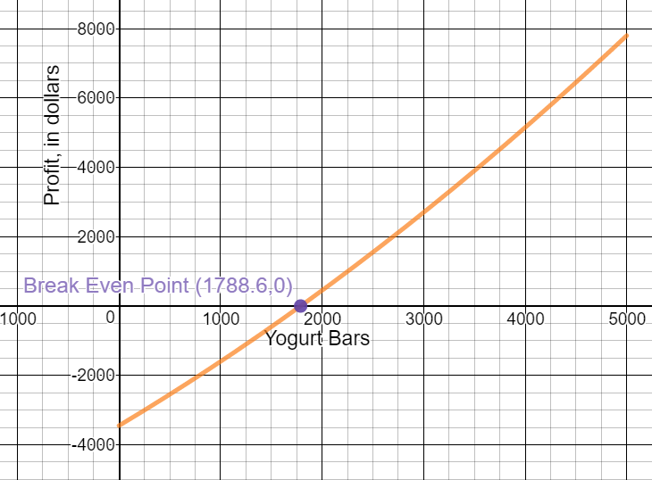
-
Answer the following questions about the model:
When is the profit function positive?
When production is greater than 1780 yogurt bars.
When is it negative?
When production is less than 1780 yogurt bars.
What important information does this provide the business owner?
The owner needs to produce and sell at least 1780 bars to break even and/or to make a profit.
Average Cost, Revenue, & Profit
-
It is clear from 3, 4, & 5 that the cost, revenue, and profit change based on the number of yogurt bars produced/sold. How would you determine the AVERAGE cost, revenue, and profit?
Use these equations generated earlier:
$C(x) = 3450 + 1.5x - 0.0001{x^2}\quad when\quad 0 \le \,\,x\, \le 5000$
$R(x) = 3.25x$
$P(x) = 0.0001{x^2} + 1.75x - 3450$
-
$\bar C\left( x \right)\, = \frac{{C\left( x \right)}}{x} = \frac{{3450 + 1.5x - 0.0001x}}{x}=$
$\bar C(x)=\frac{{3450}}{x} + 1.5 - 0.0001x$
-
$\bar R\left( x \right)\, = \frac{{R\left( x \right)}}{x} = \frac{{3.25x}}{x} = $
$\bar R=3.25$
-
$\bar P\left( x \right)\, = \frac{{P\left( x \right)}}{x} = \frac{{0.0001{x^2} + 1.75x - 3450}}{x} =$
$\bar P= 0.0001x + 1.75 - \frac{{3450}}{x}$
-
-
Find the average cost and explain the result:
-
$\bar C(0)\, =$
undefined (Can't divide by zero.)
- $\bar C(1000)\, =$
$4.85$
At a production level of 1000 bars, the average cost to produce one bar is $4.85.
- $\bar C(5000)\,$ =
$1.69$
At a production level of 5000 bars, the average cost to produce one bar is $1.69.
-
-
Is there a difference in the average cost when the number of bars produced changes? Why or why not?
Yes. Average cost decreases as the production level increases. The initial costs are divided by a larger number thus decreasing the amount per bar.
Marginal Cost, Revenue, & Profit
Use these equations generated earlier:
$C(x) = 3450 + 1.5x - 0.0001{x^2}\quad when\quad 0 \le \,\,x\, \le 5000$
$R(x) = 3.25x$
$P(x) = 0.0001{x^2} + 1.75x - 3450$
-
Determine $C'\left( x \right)$. What does this represent?
$C'\left( x \right) = 1.5 - 0.0002x$
$C'\left( x \right)$ represents the estimated cost to produce one more bar, at a production level of x bars.
-
Determine $C'\left( {1000} \right)$. Interpret this result.
$C'\left( {1000} \right) = 1.5 - 0.0002\left( {1000} \right) = 1.3$
At a production rate of 1000 bars, the cost to produce the 1001th bar is estimated to be \$1.30.
-
When is $C'\left( x \right) = 0$? Explain your answer.
$1.5 - 0.0002x = 0$
$1.5 = 0.0002x$
$7500 = x$
$C'\left( x \right)$ will never equal 0. 7500 yogurt bars is outside the domain of the function.
-
Determine $R'\left( x \right)$. What does this represent?
$R'\left( x \right) = 3.25$
$R'\left( x \right)$ represents the estimated revenue to produce one more bar, at a production level of x bars.
$R'\left( x \right)$ is a constant function, therefore the revenue for one more bar will be $3.25 at any level of production.
-
Determine $P'\left( x \right)$. What does this represent?
$P'\left( x \right) = 0.0001x + 1.75$
$P'\left( x \right)$ represents the estimated profit that will be earned if the company produces one more bar, at a production level of x bars.
-
How do marginal cost, revenue, & profit relate to our discussions about average rate of change and instantaneous rate of change?
These marginal functions calculate the instantaneous rate of change at any production level.
Marginal Average Cost, Revenue, & Profit
Use these equations generated earlier:
$C(x) = 3450 + 1.5x - 0.0001{x^2}\quad when\quad 0 \le \,\,x\, \le 5000$
$R(x) = 3.25x$
$P(x) = 0.0001{x^2} + 1.75x - 3450$
-
Determine mathematical model for the marginal average cost.
$\bar C\left( x \right)\, = \frac{{3450}}{x} + 1.5 - 0.0001x$
$\bar C'\left( x \right)\, = - \frac{{3450}}{{{x^2}}} - 0.0001$
-
Find the average cost when 100 bars are produced and the marginal average cost when 100 bars are produced. Interpret these quantities.
Average Cost:
$\bar C\left( {100} \right)\, = \frac{{3450}}{{100}} + 1.5 - 0.0001\left( {100} \right) = 35.99$
At a production level of 100 bars, the average cost to produce each bar is $35.99. This number is very high, and agrees with our previous calculation that the company does not start making a profit until the production level reaches 1780 bars.
Marginal Average Cost:
$\bar C'\left( {100} \right)\, = - \frac{{3450}}{{{{\left( {100} \right)}^2}}} - 0.0001 = - .3451$
At a production level of 100 bars, the marginal average cost to produce one extra bar is -$0.35. At this level of production, the average cost will decrease by approximately 35 cents per bar if an additional bar is produced each day.
-
Based on your answers from the question above, estimate the average cost per bar at a production level of 101 bars per day.
Average cost per bar at a production level of 101 would be the average cost at 100 plus the marginal average cost at 100.
$\bar C\left( {101} \right)\, = \bar C\left( {100} \right) + \bar C'\left( {100} \right) = 35.99\, - .3451 = 35.6449 \approx 35.64$
At a production rate of 100 bars per day, the average cost per bar to produce 101 bars would be approximately $35.64 per bar.
Notes
Cost and Marginal Cost
-
A small company manufactures bicycle helmets. The total weekly cost (in dollars) of producing x helmets is given by:
$$C(x) = 9870 + 85x - 0.05{x^2}$$
- Find the Marginal Cost Function:
$C'\left( x \right) = 85 - 0.1x$
- Using the Marginal Cost Function: Find the marginal cost at a production level of 550 helmets per week. Interpret the results.
$C'\left( {550} \right) = 85 - 0.1(550) = 30$
The estimated cost for the 551st helmet is \$30.
- Using the Cost Function: Find the exact cost of producing the 551st item.
$C\left( {551} \right) = 9870 + 85\left( {551} \right) - 0.05{\left( {551} \right)^2} = 41,524.95$
$C\left( {550} \right) = 9870 + 85\left( {550} \right) - 0.05{\left( {550} \right)^2} = 41,495$
$41,4524.95 - 41,495 = 29.95$
The actual cost for the 551st helmet is $29.95.
Marginal Cost, Revenue and Profit
- Find the Marginal Cost Function:
-
A company’s market research department recommends the manufacture and marketing of a new 3 meter lightening to USB power cord. After suitable test marketing, the research department presents the following price demand equation: $$p = 12 - 0.001x$$ where x is demand at price p. The financial department provides the cost function that includes a fixed cost of \$5600 (tooling and overhead) and variable costs of \$1.80 per power cord (materials, labor, marketing, transportation, storage): $$C\left( x \right) = 5600 + 1.80x$$
- Marginal Cost Function: Find and interpret the Marginal Cost Function
$C'(x) = 1.80$
At any production level, the cost to produce one more power cord is \$1.80.
- Revenue Function: Find the Revenue Function as a function of x.
Revenue is price multiplied by production level
$R(x) = px = \left( {12 - 0.001x} \right)x = $
$R(x)=12x - 0.001{x^2}$
- Marginal Revenue Function: Find the Marginal Revenue function and find the marginal revenue at x = 2000, x = 5000, and x = 7000. Interpret the results.
$R'\left( x \right) = 12 - 0.002x$
$R'\left( {2000} \right) = 12 - 0.002\left( {2000} \right) = 8$
Revenue increases by \$8 for the 2001st cord produced and sold.
$R'\left( {5000} \right) = 2$
Revenue increases by \$2 for the 5001st cord produced and sold.
$R'\left( {7000} \right) = - 2$
Revenue decreases by \$2 for the 7001st cord produced and sold.
- Cost and Revenue Functions: Graph the cost function and the revenue function in the same coordinate system. Find the intersection points of these two graphs and interpret the results.
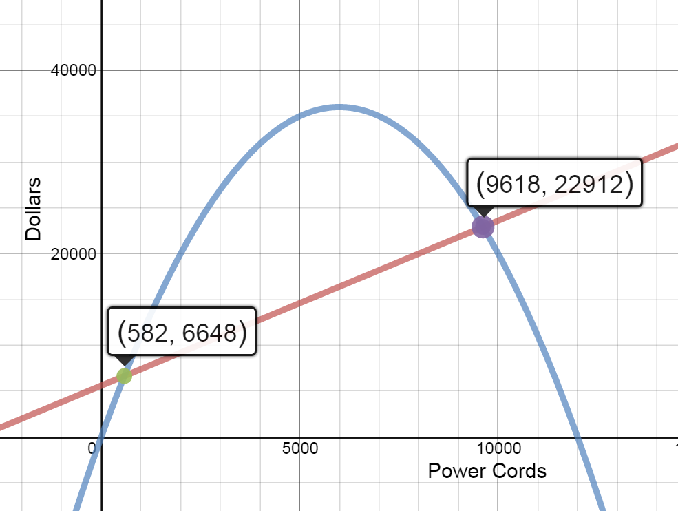
At any production level between 0 and 582 power cords, revenue is less than cost. Therefore profit is negative.
At any production level between 582 and 9618 power cords, revenue is greater than cost. Therefore profit is positive.
At any production level great than 9618 power cords, revenue is less than cost. Therefore profit is negative.
- Profit Function: Find the profit function. Sketch the graph.

$P(x) = R(x) - C(x) = (12x - 0.001{x^2}) - (5600 + 1.8x) = $
$P(x)- 0.001{x^2} + 10.2x - 5600$
- Marginal Profit Function: Find the marginal profit function and evaluate the marginal profit at x = 1000, x = 4000, and x = 6000. Interpret the results.
$P'\left( x \right) = - 0.002x + 10.2$
$P'(1000) = - 0.002(1000) + 10.2 = 8.2$
Profit increases by \$8.20 for the 1001st cord.
$P'(4000) = - 0.002(4000) + 10.2 = 2.2$
Profit increases by \$2.20 for 4001st cord.
$P'(6000) = - 0.002(6000) + 10.2 = - 1.8$
Profit decreases by \$1.80 for 6001st cord.
- Marginal Cost Function: Find and interpret the Marginal Cost Function
-
A shop manufactures performance bikes. The manager estimates that the total cost (in dollars) of producing b bikes is: $$C\left( x \right) = 1200 + 25b - 0.14{b^2}$$
- Average Cost: Find the average cost function, $\bar C\left( x \right)$. Calculate $\bar C\left( 7 \right)$ and interpret the results.
$\bar C\left( x \right)\, = \frac{{1200 + 25x - 0.14{x^2}}}{x} = \frac{{1200}}{x} + 25 - 0.14x$
$\bar C\left( 7 \right)\, = \frac{{1200}}{7} + 25 - 0.14(7) = 195.45$
The average cost of producing 7 bikes is \$195.45.
- Marginal Average Cost: Find the Marginal Average Cost Function,$\bar C'\left( x \right)$. Calculate $\bar {C'} \left( 7 \right)$ and interpret the results.
$\bar C\left( x \right)\, = 1200{x^{ - 1}} + 25 - 0.14x$
${\bar C ^\prime }\left( x \right) = - 1200{x^{ - 2}} - 0.14$
${\bar C ^\prime }\left( 7 \right) = - 24.63$
When the 8th bike is produced, the average cost per bike decreases by \$24.63.
- Application: Use the results above to estimate the average cost per bicycle at a production level of 8 bikes.
\$195.45-\$24.63=$170.82
The estimated average cost per bicycle at a production level of 8 bikes is $170.82.
- Average Cost: Find the average cost function, $\bar C\left( x \right)$. Calculate $\bar C\left( 7 \right)$ and interpret the results.